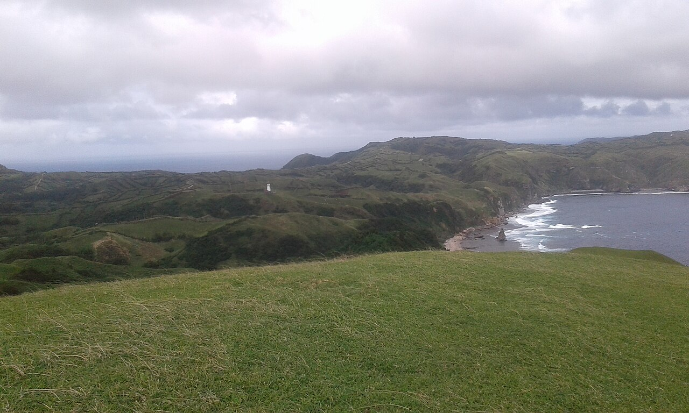
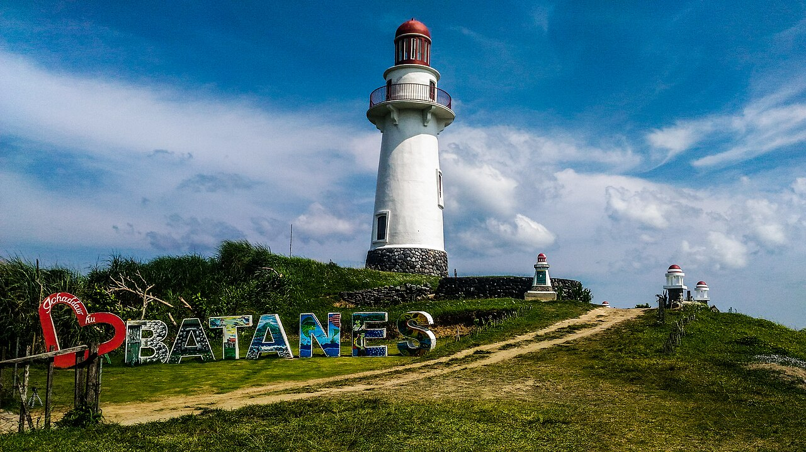
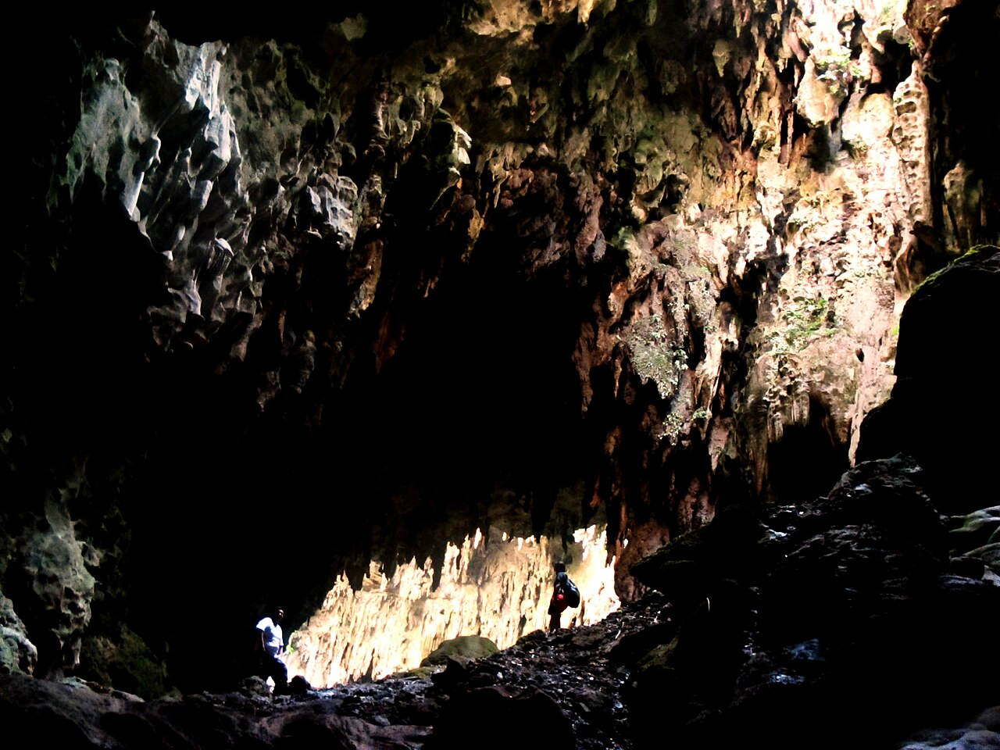
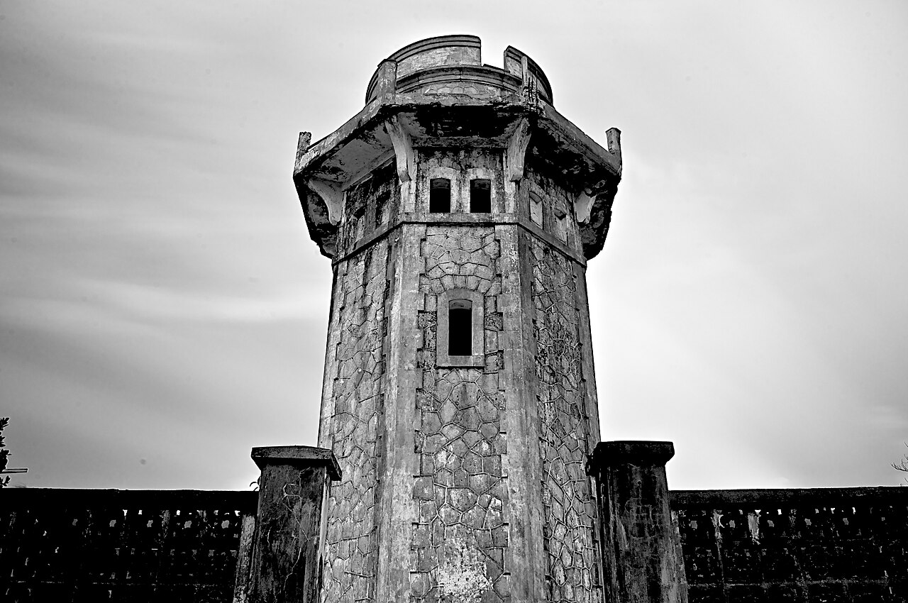
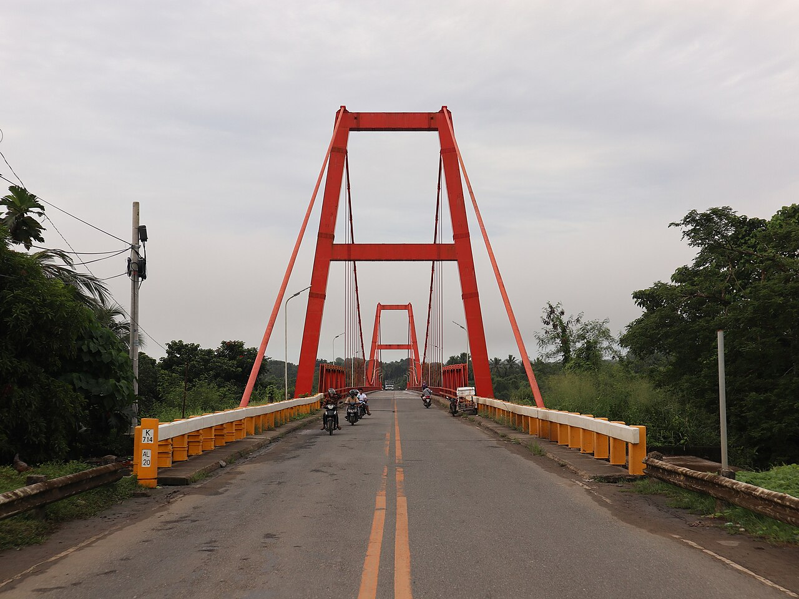
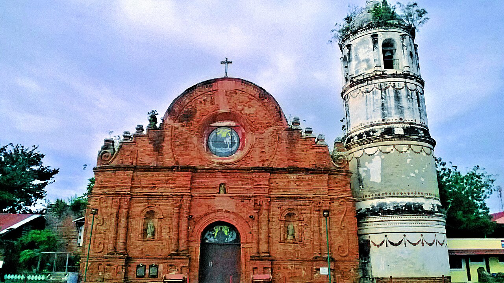
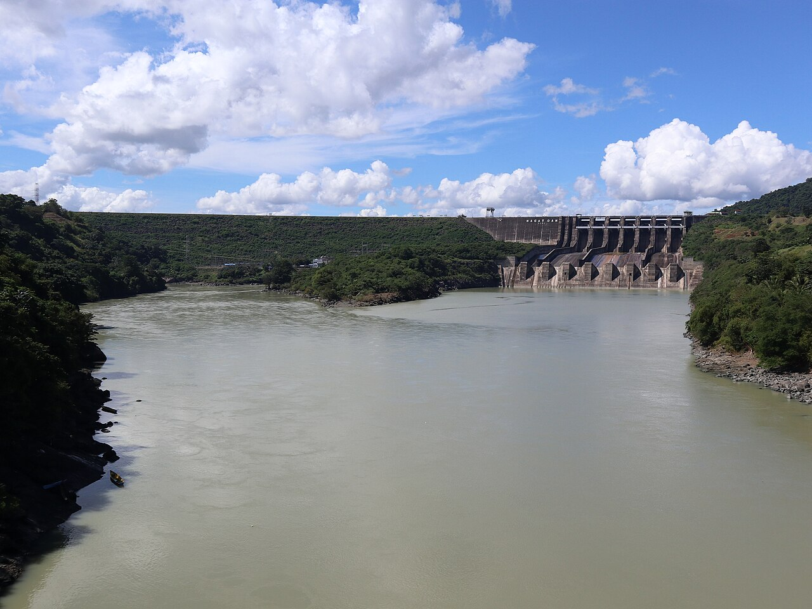
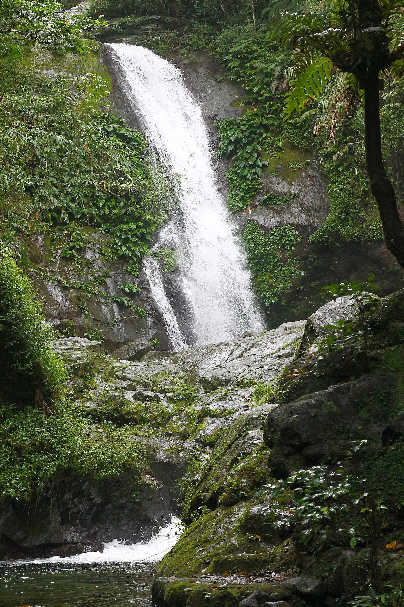
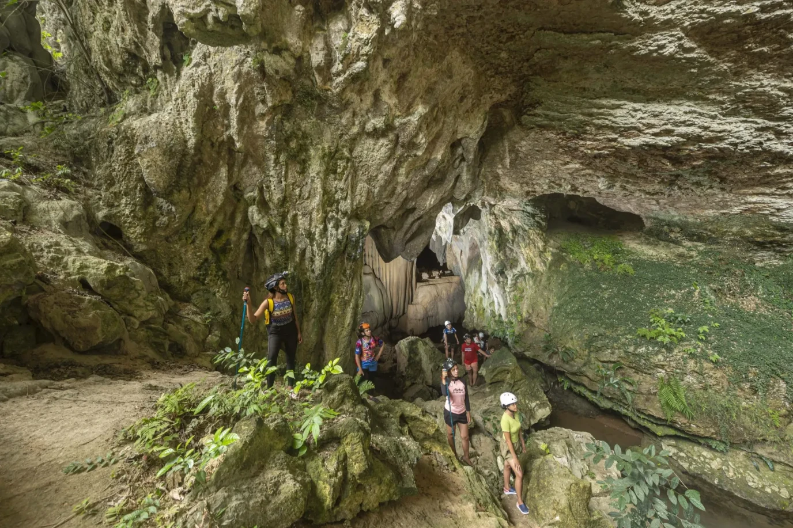

Marlboro Hills (Racuh a Payaman)
Racuh a Payaman is a vast communal pasture where cows and carabaos graze freely on rolling green hills. From the top, visitors are rewarded with sweeping views of the Pacific Ocean and the West Philippine Sea meeting at the horizon.
📍 Mahatao, Batanes

Basco Lighthouse (Naidi Hills)
Perched on Naidi Hills, this stone lighthouse is the most iconic landmark of Batanes' capital. Climb to its viewing deck at sunset to watch the sky glow over Basco town, Mount Iraya, and the sea.
📍 Basco, Batanes

Callao Cave
Callao Cave is a seven-chambered limestone cave whose first chamber holds a natural chapel lit by sunlight streaming through a hole in the ceiling. Archaeologists also found the remains of Homo luzonensis here, making it one of the most important prehistoric sites in Southeast Asia.
📍 Peñablanca, Cagayan

Palaui Island & Cape Engaño Lighthouse
Palaui Island is a protected marine reserve known for its turquoise waters, coral reefs, and rugged coastline. A short hike leads to the Spanish-era Cape Engaño Lighthouse, which overlooks the Dos Hermanas islets and the Pacific Ocean.
📍 Santa Ana, Cagayan

Magapit Suspension Bridge
Spanning the mighty Cagayan River, the Magapit Suspension Bridge is one of the longest suspension bridges in the country. It offers a scenic stop for photos of the river and the surrounding hills on the way to the northern coast.
📍 Lal-lo, Cagayan

St. Matthias Parish Church (Tumauini Church)
Built by Dominican friars in the 18th century, Tumauini Church is famous for its ornate baked-brick facade and its rare cylindrical bell tower. It is declared a National Cultural Treasure and is one of the finest examples of Baroque architecture in the north.
📍 Tumauini, Isabela

Magat Dam
Magat Dam is one of the largest dams in Southeast Asia, supplying irrigation and hydroelectric power to the valley. Its wide reservoir, framed by forested hills, is a relaxing spot for sightseeing, boating, and picnics.
📍 Ramon, Isabela

Imugan Falls
Hidden in the cool mountains of Santa Fe, Imugan Falls is reached by a refreshing trek through pine and forest trails. Its clear, cold plunge pool is perfect for a dip after the hike.
📍 Santa Fe, Nueva Vizcaya

Aglipay Caves and Campsite
The Aglipay Caves are a network of over 30 interconnected caves filled with stalactites, stalagmites, and underground passages. The surrounding campsite makes it a favorite for spelunking, camping, and nature trips.
📍 Aglipay, Quirino